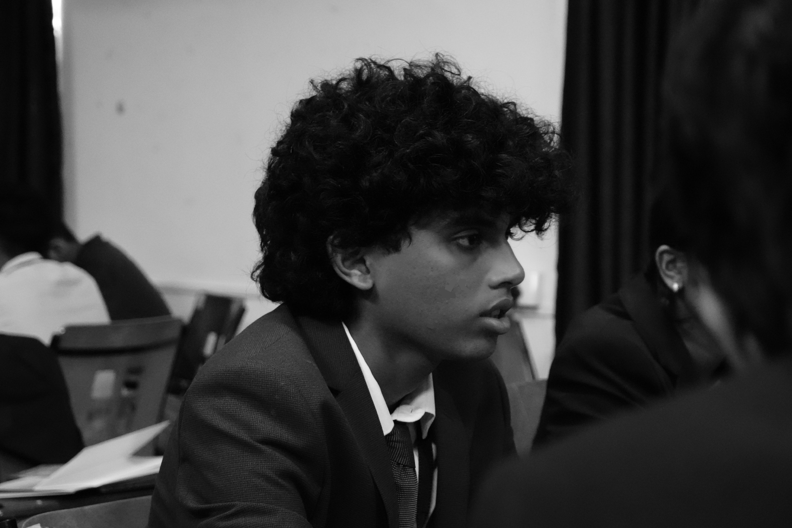

For now, an outline.
I’m Jovan — a student of systems, stories, and the space between them.
This is where a more personal introduction will go. For now, think of it as an open notebook: a place to follow the questions, ideas, and small discoveries that keep me curious.
A note on what’s now- Based in
- Kerala, India
- Studying
- Computer Science & AI
- Making
- Websites, programs, stories
- Writing
- Fiction, essays, whatever sticks
- Currently
- ...

Continue wanderingThings made & unmade